Sommaire
- Préparation & Installation de Docker
- 1er conteneur : exécution, listing, inspect
- Déployer Nginx (ports et mapping)
- Images : pull, inspect, save/load, commit
- Docker Hub : tag & push
- Réseaux : bridge, custom network, ping
- Volumes & montages d'hôte
- Dockerfile, build args et multi-stage
- Docker Compose : stack & hot-reload
- Configuration daemon.json (DNS, logs, storage)
- Nettoyage & bonnes pratiques
- Conclusion
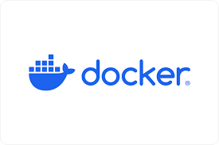
Préparation & Installation de Docker (Ubuntu/Debian)
Nous commençons par préparer l’environnement afin d’installer Docker Engine, containerd et le plugin
docker-compose. Les commandes suivantes s’appliquent à une distribution Debian/Ubuntu ; nous les
exécutons dans cet ordre pour garantir une installation propre et reproductible.
# 1. Mise à jour et installation des paquets nécessaires
sudo apt update
sudo apt install -y ca-certificates curl gnupg lsb-release
# 2. Ajouter la clé GPG officielle Docker
sudo mkdir -p /etc/apt/keyrings
curl -fsSL https://download.docker.com/linux/debian/gpg | sudo gpg --dearmor -o /etc/apt/keyrings/docker.gpg
# 3. Ajouter le dépôt Docker pour Debian
echo \
"deb [arch=$(dpkg --print-architecture) signed-by=/etc/apt/keyrings/docker.gpg] \
https://download.docker.com/linux/debian \
$(lsb_release -cs) stable" | sudo tee /etc/apt/sources.list.d/docker.list > /dev/null
# 4. Installer Docker Engine, CLI et Compose plugin
sudo apt update
sudo apt install -y docker-ce docker-ce-cli containerd.io docker-compose-plugin
# 5. Démarrer et activer le service Docker
sudo systemctl start docker
sudo systemctl enable docker
sudo systemctl status docker --no-pager
Ce que nous faisons et pourquoi :
- Nous mettons à jour les paquets pour partir d’un système à jour et éviter des conflits.
- Nous importons la clé GPG de Docker pour garantir l’intégrité des paquets téléchargés.
- Nous ajoutons le dépôt officiel Docker pour obtenir une version stable et maintenue.
- Nous installons Docker Engine et le plugin compose afin d’utiliser
docker et
docker compose (nouvelle syntaxe recommandée).
Remarque : Sur Windows ou macOS, nous utilisons Docker Desktop ; la logique de base
(images, conteneurs, volumes) reste identique dans le terminal.
Choix de l'utilisateur qui exécute les conteneurs
Pour nos démonstrations en laboratoire nous choisissons souvent d’exécuter les conteneurs avec un
utilisateur non root, mais pour simplifier les étapes et éviter des soucis de permissions lors du TP,
nous identifions ici l'utilisateur qui exécutera les conteneurs. Dans cet exemple, nous l’ajoutons au
groupe docker (ceci évite d’utiliser sudo pour chaque commande).
# Ajouter l'utilisateur courant au groupe docker
sudo usermod -aG docker $USER
# Pour appliquer la modification immédiatement sans déconnexion possible :
newgrp docker || echo "Déconnecte-toi et reconnecte-toi pour finaliser l'ajout au groupe"
Attention : l'ajout d'un utilisateur au groupe docker lui confère des
capacités proches du root sur les ressources Docker — nous appliquons cette configuration uniquement
sur des environnements de test ou machines personnelles.
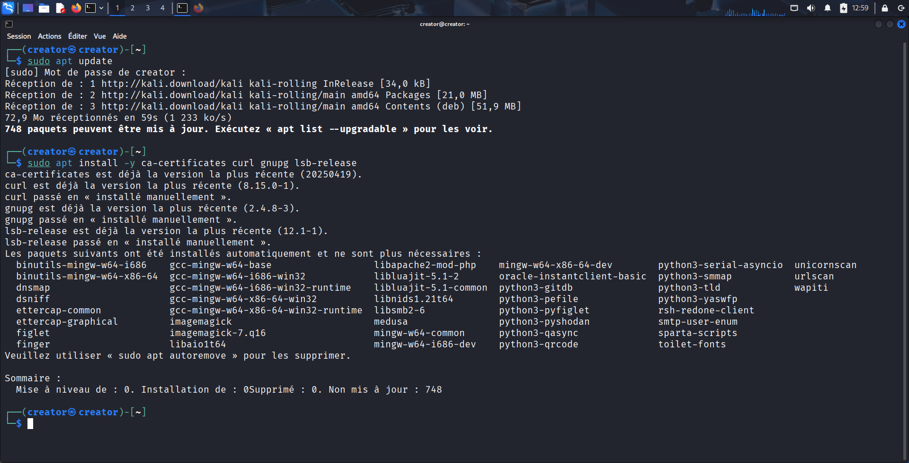
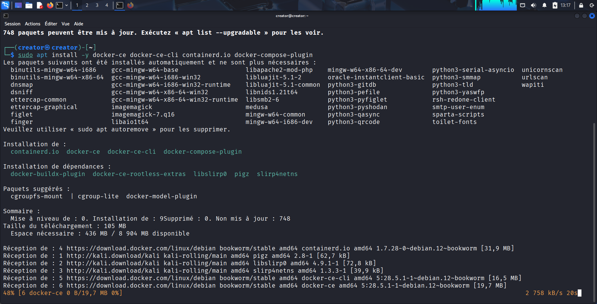
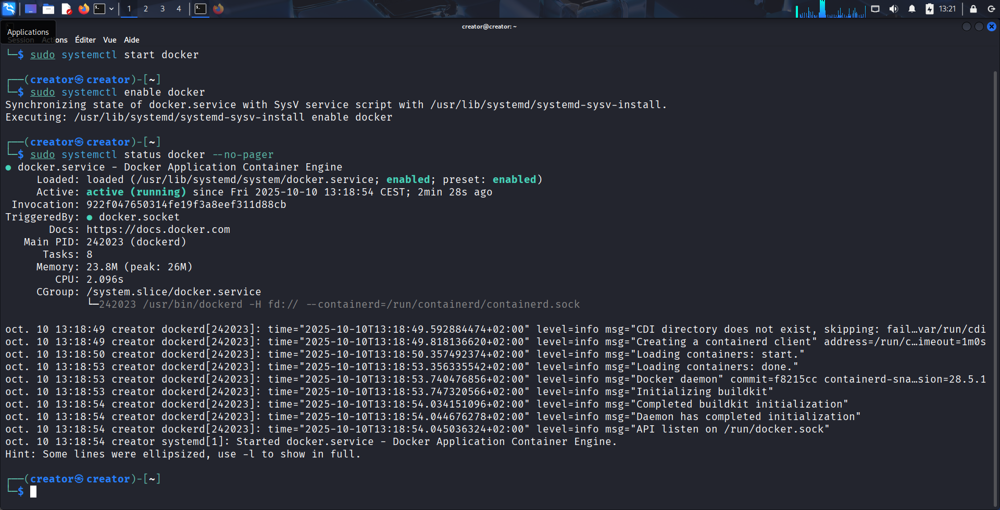
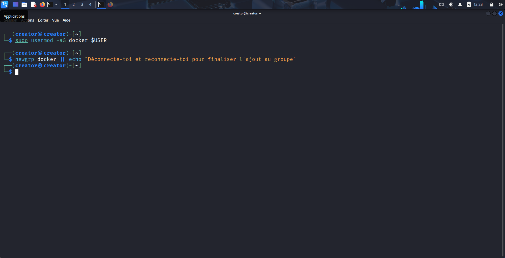
Lancer notre premier conteneur, lister, inspecter, entrer
Nous lançons un conteneur Debian interactif pour vérifier l’environnement d’exécution et nous
familiariser avec les commandes de base : démarrage, listing et inspection des métadonnées.
# Lancer un conteneur debian en mode interactif (bash), puis sortir avec 'exit'
docker run -it --name test-debian debian:latest bash
# Lister les conteneurs en cours (running)
docker ps
# Lister tous les conteneurs (y compris stopped)
docker ps -a
# Inspecter un conteneur (métadonnées JSON)
docker inspect test-debian
# Exécuter une commande dans un conteneur déjà démarré (ex: ouvrir un shell)
docker exec -it <container_id_or_name> bash
Observations :
- Avec
docker inspect nous obtenons des informations précises (IP, volumes,
commandes d’entrée) utiles pour le diagnostic.
Astuce : Nous pouvons utiliser --rm pour que le conteneur soit automatiquement
supprimé après arrêt, ce qui évite l'accumulation de conteneurs tests.
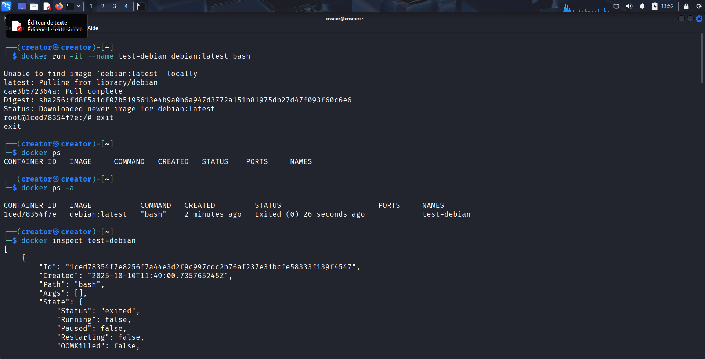
Déployer Nginx — exposition de ports et accès depuis le navigateur
Nous déployons un serveur Nginx dans un conteneur afin de comprendre le mapping de ports entre
l'hôte et le conteneur, puis nous accédons à la page par le navigateur pour valider le déploiement.
# Déployer Nginx en détaché et exposer le port 80 du conteneur sur 8090 de l'hôte
docker run -d --name web-nginx -p 8090:80 nginx:stable
# Vérifier le conteneur
docker ps
# Accès depuis navigateur : http://<IP_de_la_machine>:8090
# Si tu es en local (même machine), utilise : http://localhost:8090
Explication pratique :
Le paramètre -p 8090:80 signifie que nous redirigeons le port 8090 de la machine
hôte vers le port 80 du conteneur. Sans option -p, le service reste isolé et n'est
pas accessible directement depuis l'extérieur.
Exécution sans préciser l'hôte (port aléatoire)
# Exécuter sans -p (Docker alloue un port aléatoire côté hôte si demandé)
docker run -d --name web3 -P nginx:stable
# Voir le mapping
docker port web3
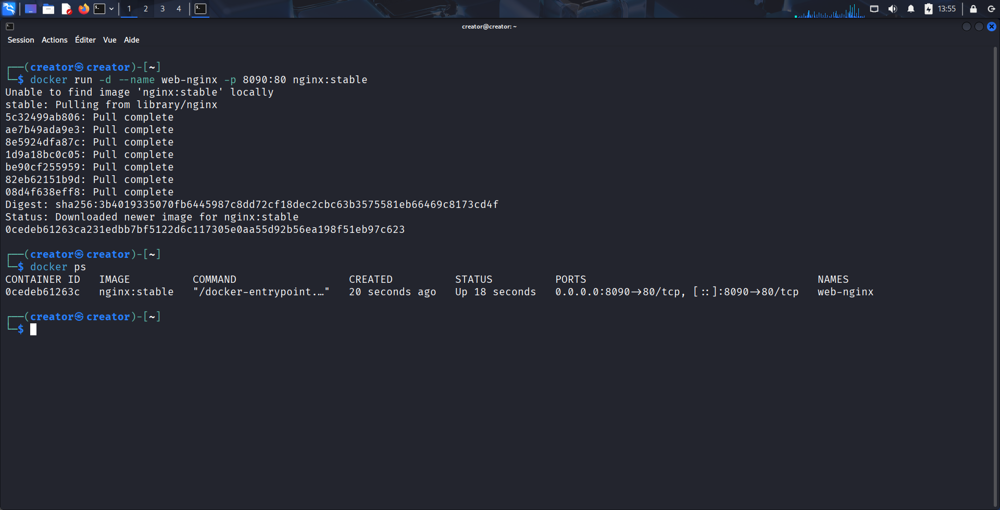
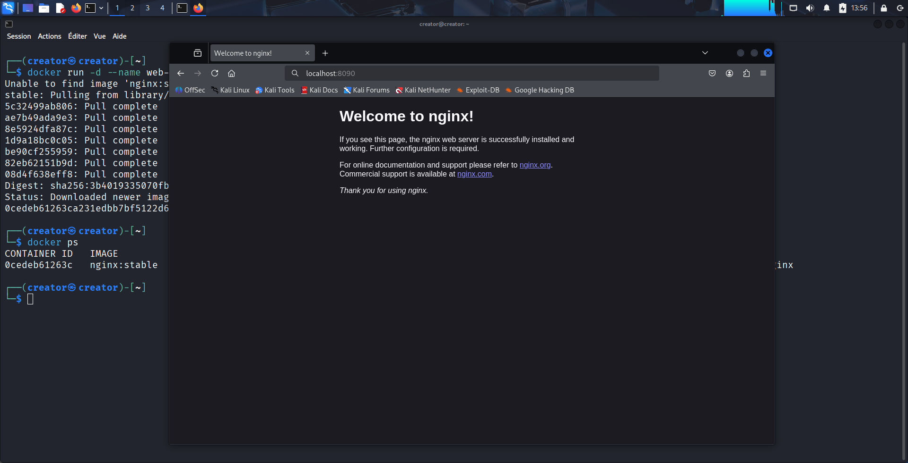
Images : récupérer, inspecter, sauvegarder et recréer
Nous manipulons des images Docker (pull, inspect, save/load) et démontrons comment transformer un
conteneur modifié en image pour réutilisation ou partage.
# Pull d'une image Alpine
docker pull alpine:latest
# Lister les images (affichage standard)
docker images
# Lister images sans troncature d'ID
docker images --no-trunc
# Filtrer les images par nom
docker images --filter=reference='alpine*'
# Inspecter une image (métadonnées)
docker image inspect alpine:latest
# Faire un commit d'un conteneur en image (créer une image à partir d'un conteneur modifié)
docker commit <container_id_or_name> monrepo/monimage:tag
# Sauvegarder une image dans un tar
docker save -o nginx-image.tar nginx:stable
# Charger une image depuis un tar
docker load -i nginx-image.tar
Commentaires :
- Nous utilisons
docker commit pour capturer rapidement l’état d’un conteneur
lors d’un test, mais nous privilégions l’écriture d’un Dockerfile pour la
reproductibilité.
docker save/load est pratique pour transporter des images entre environnements
isolés ou pour archivage.
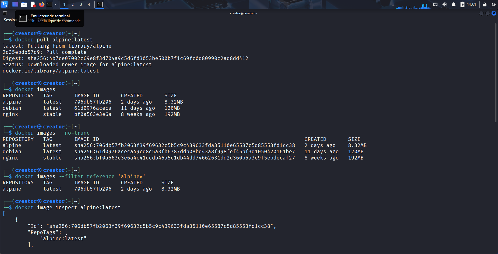
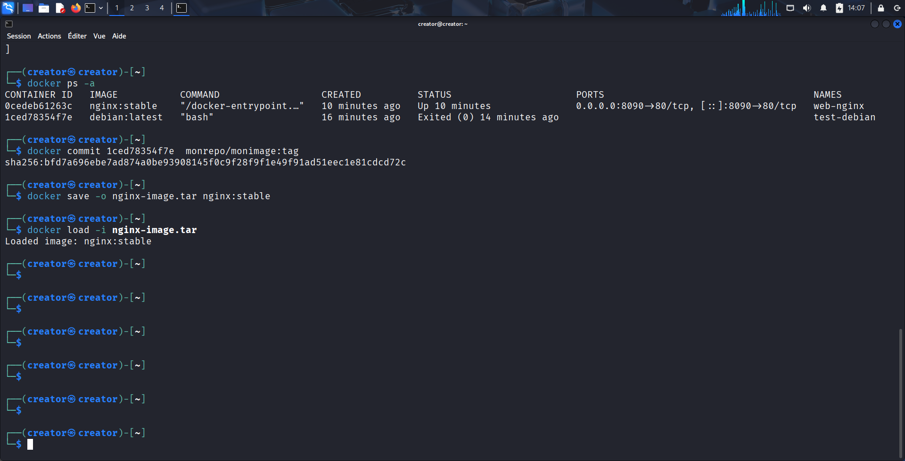
Docker Hub — afficher, tagger et pousser une image
Nous publions une image sur Docker Hub pour la partager. Cette étape nécessite un compte et une
authentification préalables.
# Se connecter au Docker Hub
docker login
# Tagger l'image locale avec le préfixe Docker Hub (username/image:tag)
docker tag monrepo/monimage:tag tonuser/monimage:tag
# Pousser
docker push tonuser/monimage:tag
Remarque : une fois poussée, nous vérifions la présence de l'image sur Docker Hub via
l'interface web pour s'assurer que le push s'est bien déroulé.
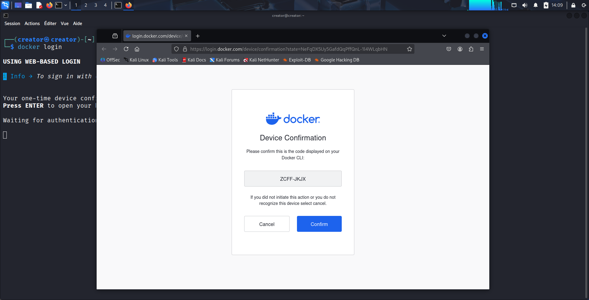
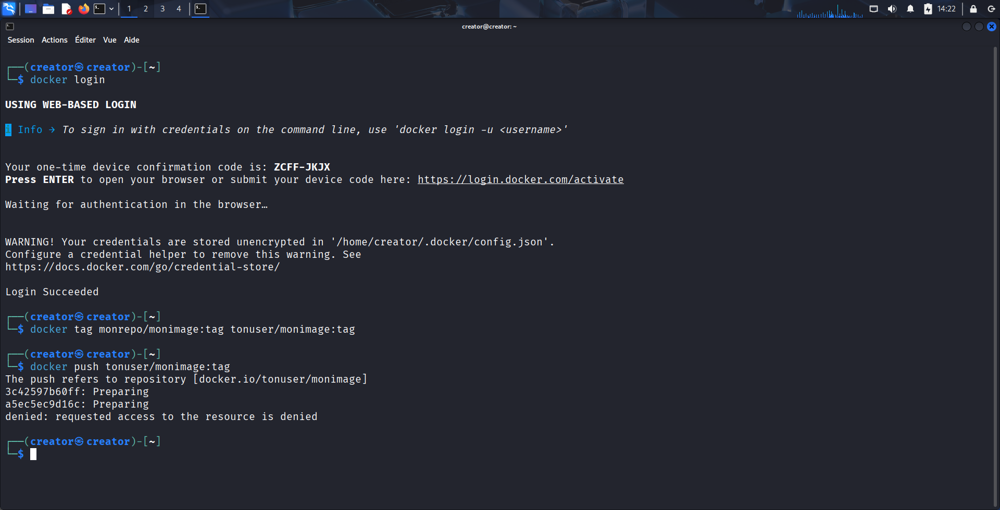
Réseaux Docker — bridge par défaut et réseau personnalisé
Nous explorons le réseau bridge par défaut, créons un réseau pont personnalisé et testons la
communication entre conteneurs en utilisant le DNS interne fourni par Docker.
# Lister les réseaux
docker network ls
# Inspecter le réseau bridge par défaut
docker network inspect bridge
# Créer un réseau bridge personnalisé
docker network create --driver bridge mynet
# Lancer deux conteneurs et les connecter au réseau personnalisé
docker run -d --name cont1 --network mynet alpine sleep 3600
docker run -d --name cont2 --network mynet alpine sleep 3600
# Entrer dans cont1 et ping cont2 (installer iputils si nécessaire)
docker exec -it cont1 sh
# Dans le conteneur : apk add --no-cache iputils && ping -c 3 cont2
Observations réseau :
- Les conteneurs connectés au même réseau peuvent se joindre par nom grâce au DNS interne de
Docker.
- Pour tester la connectivité, nous installons les utilitaires nécessaires (ex : ping).
Test d'accès Internet : depuis un conteneur nous exécutons apk update
puis ping -c 3 8.8.8.8 pour valider l'accès externe.
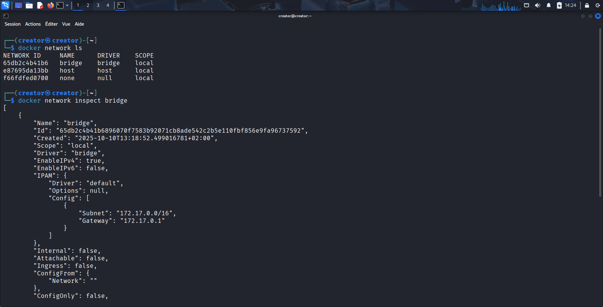
Volumes & montages d'hôte — persistance des données
Nous démontrons deux approches pour la persistance : les bind mounts (montage d’un dossier hôte)
et les volumes Docker (gérés par Docker). Nous vérifions que les données persistent entre
conteneurs.
# 1) Bind mount (dossier hôte monté dans le conteneur)
mkdir -p /home/$USER/docker-shared
docker run -d --name volsharing1 -v /home/$USER/docker-shared:/var/www/html -p 8081:80 nginx:stable
# 2) Volume Docker (géré par Docker)
docker volume create mydata
docker run -d --name busybox-cont -v mydata:/data busybox sh -c "sleep 3600"
# Dans le conteneur -> créer un fichier
docker exec -it busybox-cont sh -c "echo 'hello from container' > /data/hello.txt"
# Monter un autre conteneur sur le même volume et lire le fichier
docker run --rm -it -v mydata:/data alpine cat /data/hello.txt
Pourquoi choisir l’un ou l’autre :
- Les bind mounts reflètent exactement un répertoire de l'hôte — pratique pour le développement
(live-edit, hot-reload).
- Les volumes Docker sont isolés de l'hôte et plus portables, ce qui les rend recommandés en
environnement de production.
- Nous utilisons ces exemples pour montrer la persistance et le partage de fichiers entre
conteneurs.
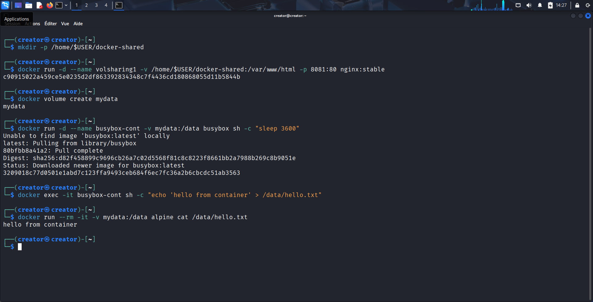
Dockerfile, ARG, ENV et multi-stage builds
Nous écrivons des Dockerfiles reproductibles, expliquons la différence entre ARG et
ENV, et montrons un exemple multi-stage pour réduire la taille de l'image finale.
Exemple simple — Dockerfile (nginx personnalisé)
# Dockerfile
FROM nginx:stable
COPY index.nginx-debian.html /usr/share/nginx/html/index.nginx-debian.html
COPY start.sh /usr/local/bin/start.sh
RUN chmod +x /usr/local/bin/start.sh
codeblock ["/usr/local/bin/start.sh"]
# start.sh (script de démarrage)
#!/bin/sh
# script simple qui démarre nginx en foreground
nginx -g 'daemon off;'
Build & run :
docker build -t mon-nginx:custom .
docker run -d --name mon-nginx -p 8082:80 mon-nginx:custom
ARG vs ENV — explication
# Exemple - Dockerfile snippet
ARG USERNAME=some_user
ENV RUN_USER=${USERNAME}
# ARG est utilisé uniquement au build-time ; ENV est conservée dans l'image et disponible runtime
Exemple multi-stage (Node app)
# Multi-stage Dockerfile (extrait)
# Stage 1 : build
FROM node:20 AS builder
WORKDIR /app
COPY package*.json ./
RUN npm install --production=false
COPY . .
RUN npm run build
# Stage 2 : runtime léger
FROM node:20-slim
WORKDIR /app
COPY --from=builder /app/dist ./dist
COPY package*.json ./
RUN npm install --production=true
codeblock ["node", "dist/server.js"]
Pourquoi le multi-stage :
Nous séparons l'étape de compilation contenant tous les outils nécessaires du runtime qui doit
être minimal. Ainsi, l'image finale est plus légère et plus sécurisée.
Docker Compose — déployer une stack et activer le hot-reload
Nous déployons une application multi-conteneurs avec Docker Compose et utilisons des volumes pour le
développement afin d'obtenir un rechargement à chaud des fichiers sources.
# docker-compose.yml (exemple basique)
version: '3.8'
services:
web:
build: ./app
ports:
- "8083:80"
volumes:
- ./app:/usr/share/nginx/html:ro
redis:
image: redis:7
# Lancer la stack
docker compose up -d --build
# Vérifier les services
docker compose ps
# Voir les logs
docker compose logs -f web
Remarque :
En montant le dossier source de l'hôte dans le conteneur
(volumes: ./app:/usr/share/nginx/html),
nos modifications sont prises en compte immédiatement sans rebuild — très utile en développement.
Configuration daemon.json — DNS, logger et storage driver
Nous modifions la configuration du démon Docker via /etc/docker/daemon.json pour
personnaliser le comportement réseau, de logs et de stockage selon nos besoins.
# Exemple /etc/docker/daemon.json
{
"dns": ["8.8.8.8", "1.1.1.1"],
"log-driver": "json-file",
"storage-driver": "overlay2"
}
# Après modification, redémarrer docker
sudo systemctl restart docker
Points importants :
- Modifier
dns est utile si nos conteneurs ne résolvent pas correctement des noms.
- Le
log-driver influe sur la gestion et la rotation des logs — à adapter selon la
taille de l’infra.
- Le
storage-driver recommandé pour la plupart des systèmes modernes est
overlay2.
Nettoyage & bonnes pratiques
Pour garder un environnement propre, nous montrons les commandes utiles pour arrêter et supprimer
des conteneurs, images et volumes non utilisés. Nous rappelons toutefois la prudence en production.
# Arrêter et supprimer tous les conteneurs (à utiliser avec prudence)
docker stop $(docker ps -aq)
docker rm $(docker ps -aq)
# Supprimer images non utilisées
docker image prune -a
# Supprimer volumes non utilisés
docker volume prune
# Nettoyage complet (dangereux : supprime tout ce qui n'est pas utilisé)
docker system prune -a --volumes
Important : ces commandes suppriment des données — nous vérifions toujours l'impact
avant exécution, surtout sur des machines partagées ou en production.
version
# Vérifier docker
docker --version
sudo systemctl status docker
# Stop / remove conteneurs
docker stop $(docker ps -aq)
docker rm $(docker ps -aq)
# Liste images (taille)
docker images --format "table {{.Repository}}\t{{.Tag}}\t{{.Size}}"
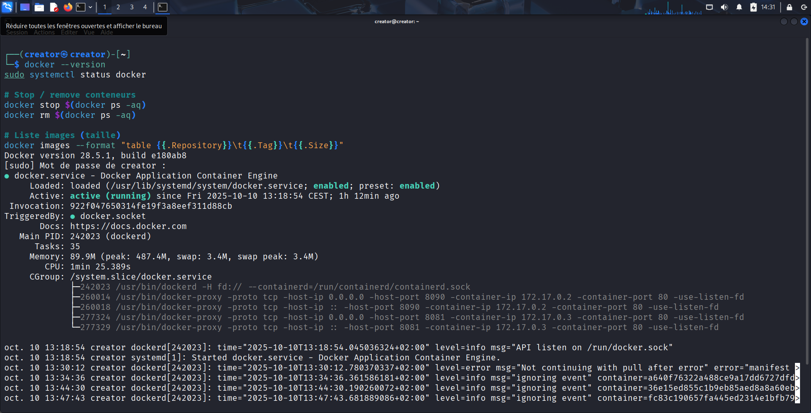
Conclusion
Ce travail pratique a permis d’acquérir une maîtrise progressive de Docker, depuis l’installation initiale
jusqu’au
déploiement de stacks multi-conteneurs. Nous avons pu :
- Installer et configurer Docker sur Kali Linux, en vérifiant le bon fonctionnement des services et des
versions.
- Créer, exécuter et gérer des conteneurs pour différentes images (Debian, Nginx), tout en testant
l’exposition
des ports et la communication réseau.
- Manipuler les images : pull, push vers Docker Hub, sauvegarde, chargement et gestion des tags.
- Mettre en place des volumes pour la persistance des données et utiliser Docker Compose pour orchestrer
plusieurs
services.
- Construire des images avec Dockerfile, comparer single-stage et multi-stage, et appliquer des
optimisations pour
réduire la taille des images.
- Résoudre des problèmes pratiques rencontrés, tels que les conflits de ports, la configuration DNS dans les
conteneurs ou l’authentification Docker Hub.
Ces étapes ont permis de consolider les connaissances théoriques par la pratique et de comprendre les bonnes
pratiques à adopter : gestion des volumes, sécurité des secrets, configuration des logs, et utilisation d’une
CI
pour des builds reproductibles.
En résumé, ce TP illustre l’ensemble du cycle de vie d’un conteneur Docker, depuis la configuration de
l’environnement jusqu’au déploiement d’applications orchestrées, offrant une base solide pour des projets
futurs en
développement et en administration de systèmes conteneurisés.
Ressources & liens rapides
Récap commandes essentielles
docker rundocker ps, docker ps -adocker images, docker pulldocker build, docker pushdocker-compose up -d / docker compose
© 2025 — Rapport de travail sur Docker — Ibrahima Khalilou Thiam